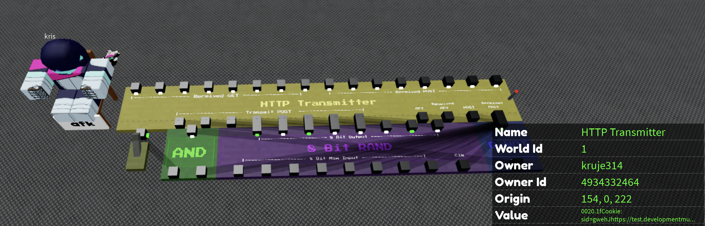

intens's blapi has recently been getting ddosed by a random ass guy, and the blapi went completely down as of oct 3, 2026. this is an implementation that is compatible with muser's typewriters since at least january 2026, though it was upgraded.
don't use this shit, use intens's blapi instead please, thanks (i am not forced to make this; my api is bad as fuck and intens's api is much faster and easier to understand overall).
heres an image of somebody "terrorizing" my api (aka. a cloudflare worker reverse proxy.)

heres the serv if anybody wonders
to make your typewriter work with muser's typewriter api, change the url to https://test.developmentmuser.workers.dev/ping. (or use a mirror, https://tw-svv6.onrender.com/ping, and do more shit to modify the typewritah to NOT USE THE LAST BIT FOR SOME SHIT THAT NOBODY GIVES A FUCK UPON)
PSA: seems like my pythonanywhere has been ddosed so it gets rate limited. my cloudflare worker has been " temporarily " rate limited 👏👏👏👏👏👏 i've fixed the issue by not using the reverse proxy.
if the main api doesn't work (https://muserlogiccpu.pythonanywhere.com/ping), use a reverseproxy (https://test.developmentmuser.workers.dev/ping), and if that doesnt work too, use a mirror (https://tw-svv6.onrender.com/ping).